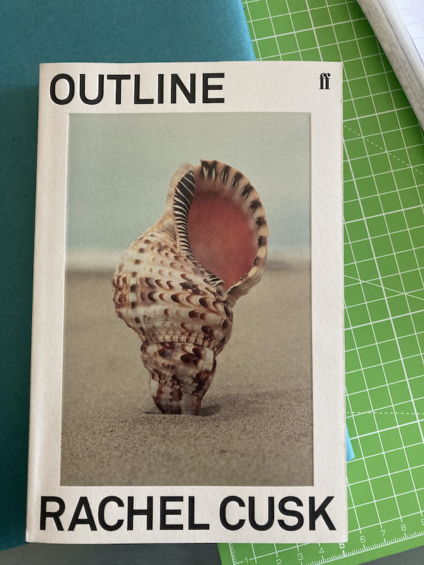

Jul. 31, 2021
Outline is the first of a trilogy of novels by Rachel Cusk. In it, the narrator is travelling to Athens to help teach on a creative writing class. You could describe the rest of what happens in a couple of sentences. I won’t be doing so because first, that’s spoilers, and I don’t do spoilers; second, Outline is one of those novels where what happens doesn’t matter quite so much as how it all happens.
As I learned from A Swim in a Pond in the Rain, George Saunders’ excellent writing class given by the dissection of seven great Russian short stories, the way things happen in stories and novels is through writing. I feel a little silly for having to be taught this about thirty years after I started reading ‘proper’ books, but Outline very much confirms this to be true. I can’t think of a better novel to have read after A Swim in a Pond in the Rain, proof as it is of Cusk’s skill as writer and how Saunders’ book primes you for the task of reading.

Chief among the techniques discussed by Saunders are the use of digression and the use of interiority. Digression happens everywhere in Outline and provides the structure for the novel. The reader’s impression of the narrator is shaped by their response to the words of the people the narrator encounters. Each of these people give long digressions away from the ‘plot’ of the novel: the trip to Athens and allusions to some drama back home. In every case we get drawn away in those characters’ narratives because Cusk very deftly moves us from the narrator’s head into the heads of those talking. Even more impressively, there are moments where you move into the heads of the people they are talking about too.
In short, this is a novel that goes as far as it can to be empathetic to its characters, at the (seeming) expense of its narrator who remains an outline. We learn her name on page 211. Nevertheless, Cusk directs how the narrator reports what she experiences and hears, how she interprets these experiences, and this allows us to infer much more about her. An author never sets out experiences for their characters with no purpose, our job as the reader is to interpret what that might be.
But an additional joy of the novel is that these inferences and interpretations could still be traps. You the reader may set these traps as a result of pouring your own experience into this ‘outline’ or perhaps the author herself is setting them. Either of these makes the following novels all the more tantalising. It doesn’t matter whether you are right: even if you are wrong, there will still be pleasure in the re-reading.
In case you can’t tell, I really enjoyed Outline. I am looking forward to re-reading it (I am currently reading it aloud to Ingrid) and to reading Transit, the next novel in the sequence.